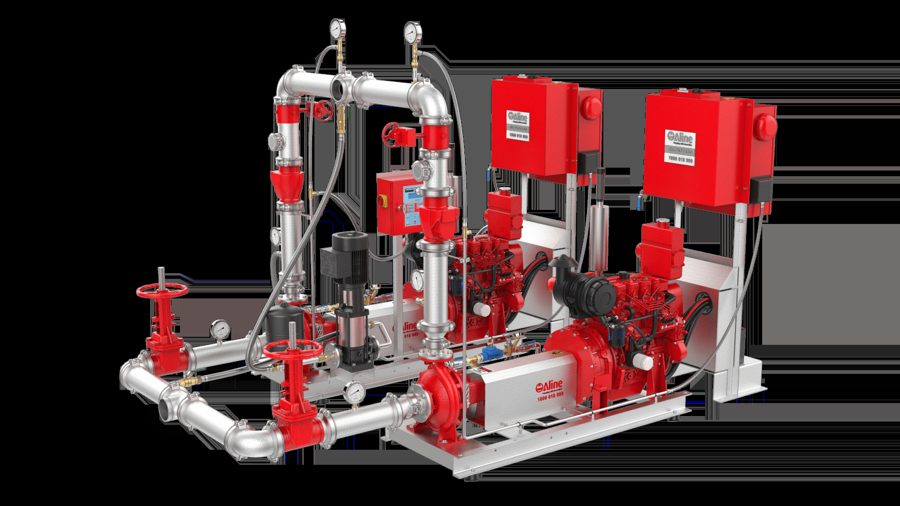
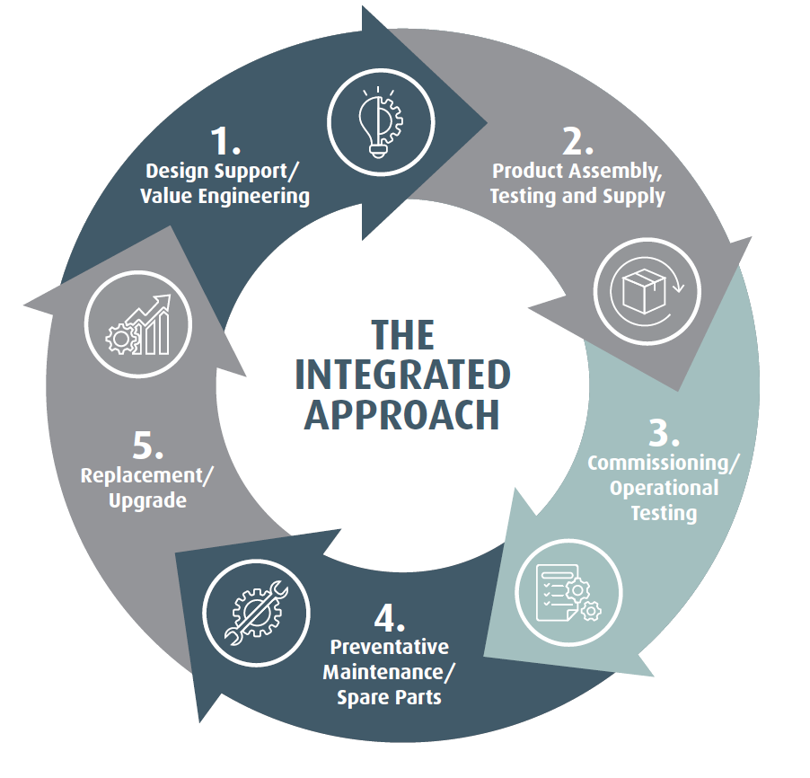
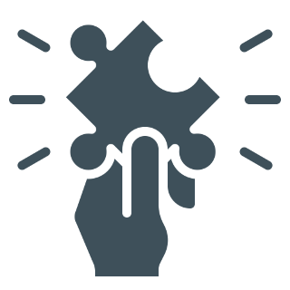
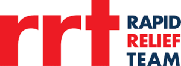

Aline Service
Servicing, preventative maintenance and technical support for pump and storage systems.
We deliver complete engineered pumping systems, from design recommendations, assembly, testing and commissioning through to parts, service and lifecycle replacement.
From specification through to lifecycle service, we've delivered pump and water systems for Australia's commercial and infrastructure sectors for over three decades. 100% Australian owned and operated.
Discuss a projectServicing, preventative maintenance and technical support for pump and storage systems.
Genuine and compatible replacement parts for pump and storage systems.

Pumps and solutions for homeowners, rural properties and domestic plumbers, delivered nationwide.

In-depth training on Aline pumping equipment, with a facility tour included. Built for hydraulic engineers, cadets and trainees to gain real hands-on experience.
Aline Pumps offers an end-to-end, cradle-to-grave approach which we call The Integrated Approach.
At Aline Pumps, buying a pump is just the beginning of the relationship. We support the full lifecycle with quality products, expert technical guidance, genuine spare parts, preventative maintenance, and responsive service.
Learn more
Find out how Aline Pumps has supported a variety of industries by providing innovative and efficient pumping solutions. Our work highlights our ability to take on unique problems, and offer tailored solutions, guaranteeing satisfaction for our clients.


Beavis & Bartels have used the services of Aline Pumps on projects such as Gold Coast University Hospital, Amberley RAAF Base, Enoggera RAAF Base and the Wintergarden redevelopment. Aline Pumps have always provided Beavis & Bartels with quick responses to quotation request, competitive pricing, prompt maintenance and excellent after sales care. Beavis & Bartels look forward to working together with Aline Pumps in the future on other major projects.
For the last 10 or more years, Aline Pumps has provided Planet Plumbing Group with excellent service and high-quality products, which services the needs of our organisation nationally. They have succeeded in providing effective solutions, which are specific and relevant to our business. They provide exceptional delivery times and also offer a reliable after sales service. We have found their service to be professional, dependable, friendly, and open over the years. Their attention to details and willingness to listen to our needs is extremely important to our company. We are very pleased with the business relationship we share with Aline Pumps and look forward to this continuing for into the future.
As we come to another business year, I would like to take this opportunity of thanking Aline Pumps for the work they have carried out in the areas of supply and service of hydraulic pumps including the Nepean Hospital East Block Project. We relied on the expertise of Aline Pumps to provide the highest standards of service for our customers. Throughout the years in which Aline Pumps have been supplying JRK hydraulic pumps, their staff's professionalism in recommending the most suitable products for specific situations, together with their Company's commitment to after sales service and support, has helped ensure that our customers receive the very best value for money from their investment. We look forward to a continued partnership into the future.
Aline Pumps showed a great deal of expertise and commitment when working alongside D&W Plumbing on such a sensitive project like Sydney City Westfields. Their ability to provide tangible solutions and work alongside our design consultants proved invaluable. Aline Pumps kept deadlines with their delivery schedule, which is crucial on such a large site. They also provided professional site wiring, commissioning, and programming of the complex pumping systems. We look forward in continuing our relationship with Aline Pumps in the future.
Since 1995, Aline Pumps has been leading innovative pumping solutions. We are committed to developing our deep industry knowledge, customer-focused practice, and dedication to quality.

With over 30 years of expertise, every project is approached with a combination of cutting-edge technology and sound knowledge.
From water storage tanks to fire pump sets, every product is expertly made with superior materials. Extensive testing and quality control systems ensure our products exceed expectations in terms of performance and longevity.
We guarantee every product satisfies the highest standards from Australian guidelines to efficiency and safety. Ensuring your satisfaction from design to delivery.

From design to commissioning, Aline Pumps provides end-to-end support for Australia's most iconic infrastructure. Discuss your project requirements with us on 1800 018 999 or send us an enquiry.